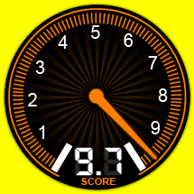
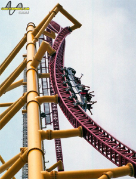

TOP THRILL DRAGSTER
SPECS
Max Height: 420 ft.
Max Speed: 120 mph
Inversions: 0
Duration: 17 sec.
Manufacturer: Intamin AG
REIVEW
Here is a amazing view of Top Thrill Dragster's amazing structure. The ride towers over 400 feet, which requires the initial launch to clock in around 120 mph. The ride may only be 17 seconds long, but it will be the most intense 17 seconds of your life. Waiting for the lights to go green is also incredibly nerve-racking. To add to the suspense, the ride will occasionally not make it up the hill. Fortunately, I did not experience a faulty ride like that. Looking back, it was probably the most fun I've ever had on a roller coaster.